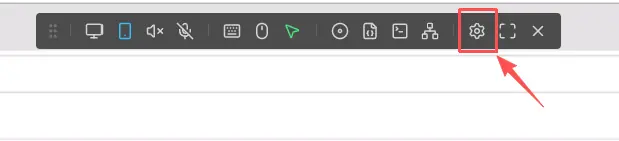
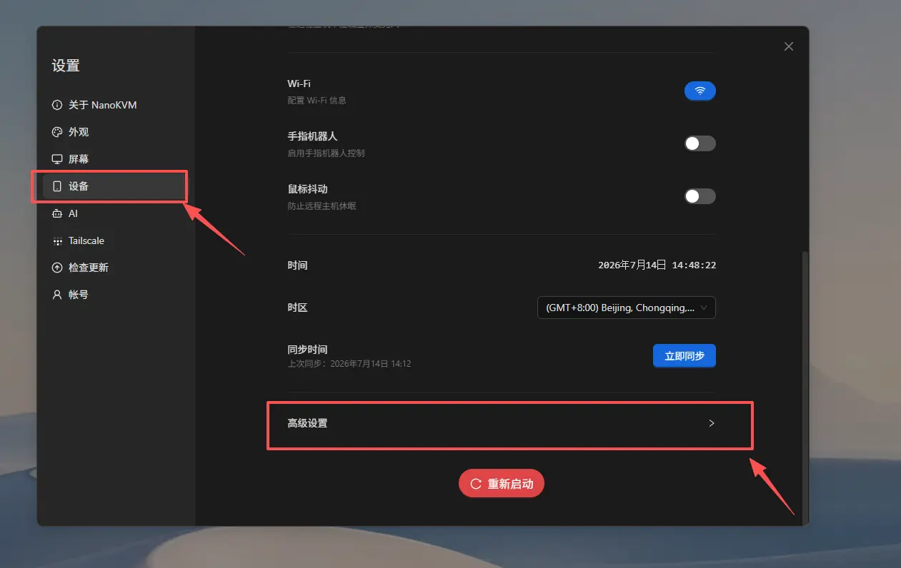
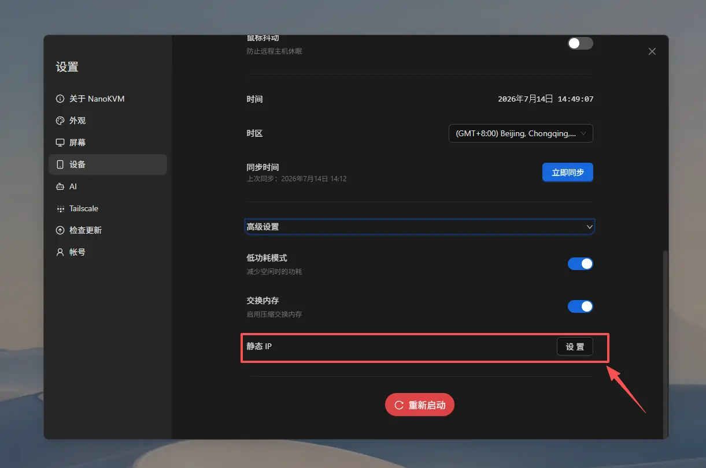
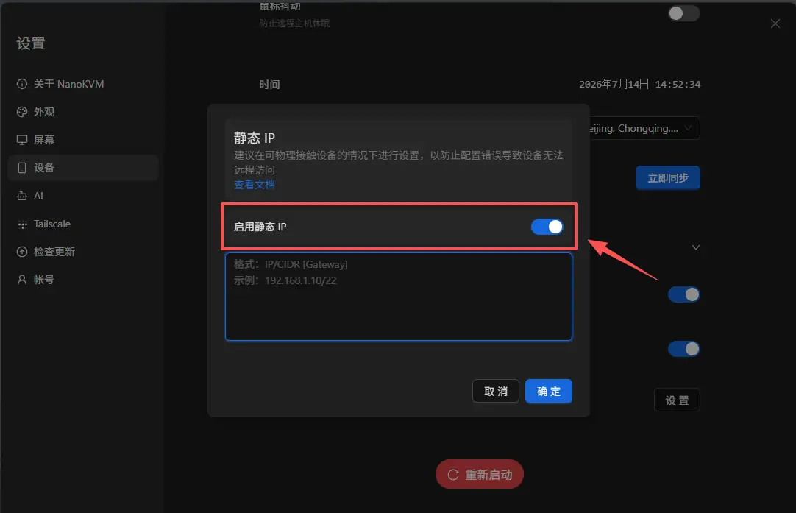
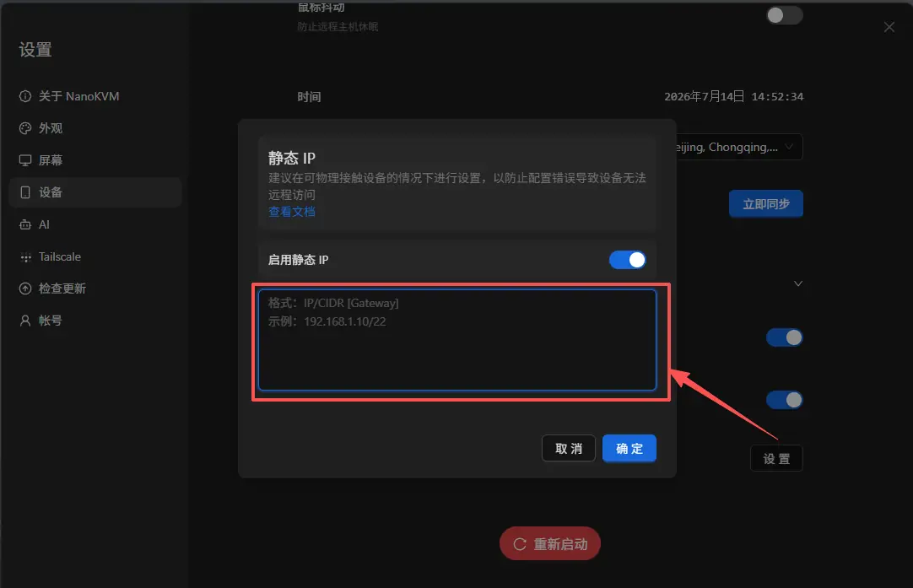

中文
中文静态 IP
配置静态 IP
静态 IP 简介
NanoKVM Go 默认通过 DHCP 从路由器获取 IP 地址。DHCP 分配的地址可能会在设备重启、路由器重启或租约更新后发生变化，导致原来的访问地址失效。
在 NanoKVM Go 网页控制端启用静态 IP 后，可以为设备设置固定的局域网地址，方便通过同一个地址长期访问 NanoKVM Go。
静态 IP 只用于固定 NanoKVM Go 在当前局域网中的地址，不能代替公网 IP，也不能直接实现外网访问。如需从外网访问 NanoKVM Go，可以参考 Tailscale 等远程访问方案。
使用前准备
配置前，请先确认：
- NanoKVM Go 已连接到需要使用静态 IP 的局域网；
- 可以通过当前 IP 正常打开 NanoKVM Go 网页控制端；
- 已了解当前局域网的网段、子网掩码和默认网关；
- 准备设置的 IP 地址与路由器位于同一网段；
- 该 IP 地址没有被路由器或其他设备占用；
- 记录 NanoKVM Go 当前的 IP 地址，以便配置异常时排查。
可以在路由器管理页面中查看局域网参数、DHCP 地址池和已连接设备。建议选择 DHCP 地址池之外、但仍位于当前局域网网段内的地址，并在路由器中为该地址做好保留或备注。
例如，当前网络参数为：
| 项目 | 示例值 |
|---|---|
| 路由器地址 | 192.168.1.1 |
| 子网掩码 | 255.255.255.0 |
| CIDR 前缀长度 | /24 |
| DHCP 地址池 | 192.168.1.100 ～ 192.168.1.200 |
| NanoKVM Go 静态 IP | 192.168.1.50 |
| 完整配置 | 192.168.1.50/24 192.168.1.1 |
在这个示例中，192.168.1.50 与路由器位于同一网段，并且不在 DHCP 地址池内。子网掩码 255.255.255.0 对应的 CIDR 前缀长度是 /24，因此不能照抄界面示例中的 /22。实际配置时，请根据自己的网络环境填写 IP、CIDR 和网关。
了解 IP、CIDR 和网关
NanoKVM Go 静态 IP 输入框使用以下格式：
IP/CIDR [Gateway]
各部分含义如下：
IP：准备分配给 NanoKVM Go 的静态 IP 地址；CIDR：当前网络子网掩码对应的前缀长度，例如/24；Gateway：默认网关，通常是路由器的局域网地址，可以省略。
[Gateway] 中的方括号表示这一项是可选的，实际填写时不要输入 [ 和 ]。IP/CIDR 与网关之间使用一个空格分隔。
不填写网关时：
192.168.1.10/22
填写网关时：
192.168.1.10/22 192.168.1.1
如果 NanoKVM Go 需要访问互联网或其他网段，建议填写正确的默认网关。网关通常需要与 NanoKVM Go 的静态 IP 位于同一子网。
/22只是界面中的格式示例，不适用于所有网络。必须先查询当前网络的子网掩码，再换算出自己的 CIDR 前缀长度。
查询当前网络的子网掩码和网关
优先登录路由器管理页面，在局域网设置或 DHCP 设置中查看子网掩码和网关。也可以在已经正常连接到同一路由器的电脑上查询：
- Windows：打开命令提示符，执行
ipconfig，查看当前网卡的“子网掩码”和“默认网关”； - macOS：打开“系统设置” > “网络”，选择当前网络，进入“详细信息” > “TCP/IP”，查看子网掩码和路由器地址；
- Linux：执行
ip -4 addr查看当前网卡地址后的 CIDR，例如192.168.1.20/24；执行ip route查看default via后的默认网关。
请查看与 NanoKVM Go 连接到同一局域网的物理网卡，不要使用 Tailscale、VPN、虚拟机或容器创建的虚拟网卡参数。
将子网掩码换算为 CIDR
CIDR 中斜杠后的数字，表示子网掩码从左到右连续的二进制 1 的数量。一个 IPv4 子网掩码由 4 段组成，每一段可以按下表换算：
| 子网掩码中的数值 | 二进制 | 1 的数量 |
|---|---|---|
255 |
11111111 |
8 |
254 |
11111110 |
7 |
252 |
11111100 |
6 |
248 |
11111000 |
5 |
240 |
11110000 |
4 |
224 |
11100000 |
3 |
192 |
11000000 |
2 |
128 |
10000000 |
1 |
0 |
00000000 |
0 |
将四段中二进制 1 的数量相加，即可得到 CIDR 前缀长度。
例如，子网掩码为 255.255.252.0：
255 255 252 0
8 + 8 + 6 + 0 = 22
所以：
255.255.252.0 = /22
如果选择的静态 IP 是 192.168.1.10，不填写网关时应输入：
192.168.1.10/22
填写网关 192.168.1.1 时应输入：
192.168.1.10/22 192.168.1.1
再例如，子网掩码 255.255.255.0 包含 24 个连续的二进制 1，所以对应 /24，应填写类似 192.168.1.50/24，而不是 /22。
常用子网掩码与 CIDR 的对应关系如下：
| 子网掩码 | CIDR |
|---|---|
255.0.0.0 |
/8 |
255.255.0.0 |
/16 |
255.255.240.0 |
/20 |
255.255.248.0 |
/21 |
255.255.252.0 |
/22 |
255.255.254.0 |
/23 |
255.255.255.0 |
/24 |
255.255.255.128 |
/25 |
255.255.255.192 |
/26 |
255.255.255.224 |
/27 |
255.255.255.240 |
/28 |
不要通过猜测选择 CIDR。CIDR 填写错误可能导致 NanoKVM Go 错误判断哪些地址位于本地网络，从而出现部分设备无法访问或网关不可达等问题。
在网页控制端配置静态 IP
打开高级设置
- 使用 NanoKVM Go 当前的 IP 地址登录网页控制端；
- 点击顶部工具栏中的
设置；

- 在设置页面中选择
设备，然后打开高级设置。

启用并填写静态 IP
- 在
高级设置中找到静态 IP；

- 启用
静态 IP；

- 按照
IP/CIDR [Gateway]格式填写静态 IP 配置；

- 检查 IP、CIDR 和网关无误后，点击
确定。
保存配置后，NanoKVM Go 的网络连接可能会短暂中断，当前网页也可能断开。这是 IP 地址发生变化时的正常现象。
使用新地址访问 NanoKVM Go
设置生效后，在浏览器地址栏中只输入新的静态 IP，例如：
http://192.168.1.50
浏览器地址中不需要填写 CIDR 和网关。请勿输入 http://192.168.1.50/24。
打开登录页面并完成登录，然后测试远程画面、键盘、鼠标和电源控制等功能。
确认配置是否成功
完成配置后，建议进行以下检查：
- 使用新设置的静态 IP 打开 NanoKVM Go 网页控制端；
- 确认视频、键鼠和电源控制功能正常；
- 重启 NanoKVM Go，再次通过相同地址访问；
- 如有条件，重启路由器后再次确认该地址仍然可用；
- 在路由器管理页面中确认没有其他设备使用相同的 IP 地址。
如果重启 NanoKVM Go 后仍可通过同一个地址访问，说明静态 IP 已正常生效。
配置静态 IP 的注意事项
IP 地址必须位于正确的网段
静态 IP 通常需要与路由器和访问端位于同一局域网网段。例如，路由器地址为 192.168.1.1、子网掩码为 255.255.255.0 时，CIDR 应填写 /24，NanoKVM Go 通常应使用 192.168.1.x 网段中的可用地址。
如果填写了其他网段的地址，例如 192.168.2.50，当前网络中的电脑可能无法直接访问 NanoKVM Go。
避免 IP 地址冲突
不要使用已经分配给电脑、手机、摄像头或其他网络设备的地址。IP 地址冲突可能导致 NanoKVM Go 和另一台设备间歇性离线或无法访问。
建议同时采取以下措施：
- 在路由器的设备列表中检查该地址是否已被占用；
- 优先选择 DHCP 地址池之外的地址；
- 如果路由器支持地址保留，为 NanoKVM Go 保留该地址；
- 记录该地址的用途，避免以后分配给其他设备。
仅使用
ping命令不能完全确认某个 IP 地址未被占用，因为处于关机或休眠状态的设备不会响应。
不要使用特殊地址
不要将以下地址设置为 NanoKVM Go 的静态 IP：
- 路由器自身的地址，例如
192.168.1.1； - 当前网段的网络地址和广播地址；具体地址由 CIDR 决定，例如
192.168.1.0/24网络中的192.168.1.0和192.168.1.255； 127.x.x.x等本地回环地址；169.254.x.x等链路本地地址；- Tailscale 使用的
100.x.x.x虚拟地址。
修改后需要使用新地址访问
静态 IP 生效后，浏览器中原来的 DHCP 地址通常不再可用。请关闭旧页面，并使用新地址重新打开 NanoKVM Go 网页控制端。
建议在修改前将新地址记录下来。如果地址填写错误，可能需要将电脑临时配置到相同网段，才能重新访问并修改 NanoKVM Go 的网络设置。
更换局域网时需要重新配置
静态 IP 是根据当前局域网规划设置的。将 NanoKVM Go 移动到另一个网段后，原静态 IP 可能无法继续使用。
在更换路由器或使用环境前，建议先禁用静态 IP，让 NanoKVM Go 恢复通过 DHCP 获取地址；也可以根据新网络的网段提前修改静态 IP。
静态 IP 不会绕过网络访问限制
配置静态 IP 不会自动开放路由器端口，也不会绕过防火墙、访客网络隔离或 VLAN 访问规则。如果电脑与 NanoKVM Go 不在同一个可互通的网络中，即使 IP 地址填写正确，也可能无法访问。
禁用静态 IP
如果希望 NanoKVM Go 恢复自动获取 IP：
- 使用当前静态 IP 登录 NanoKVM Go 网页控制端；
- 进入
设置>设备>高级设置>静态 IP； - 关闭
启用静态 IP； - 按照页面提示保存或应用设置；
- 等待 NanoKVM Go 重新从路由器获取 DHCP 地址；
- 在路由器管理页面或设备显示界面中查找新的 IP 地址，并使用新地址重新访问。
常见问题
保存后无法打开 NanoKVM Go
依次检查：
- 浏览器中输入的是否为新设置的静态 IP；
- 静态 IP 是否按照
IP/CIDR [Gateway]格式填写； - CIDR 是否与当前网络的子网掩码一致；
- 网关是否为当前路由器的局域网地址；
- 电脑和 NanoKVM Go 是否连接到同一个局域网；
- 静态 IP 是否与路由器位于同一网段；
- 该地址是否与其他设备冲突；
- 路由器是否启用了访客网络隔离、VLAN 或其他访问限制；
- NanoKVM Go 是否已经完成网络重连。
如果静态 IP 所在网段填写错误，可以将电脑的有线网络临时设置为同一网段，再尝试访问 NanoKVM Go 并修改配置。操作前请记录电脑原来的网络设置，完成后恢复为自动获取地址。
静态 IP 可以访问，但 NanoKVM Go 无法连接互联网
检查静态 IP 配置中是否填写了正确的默认网关，并确认 CIDR 与当前网络的子网掩码一致。例如，IP/CIDR 为 192.168.1.50/24、路由器地址为 192.168.1.1 时，可以填写 192.168.1.50/24 192.168.1.1。同时检查路由器的 DNS 和互联网连接是否正常。
重启后静态 IP 无法访问
检查静态 IP 是否已经成功保存，并确认路由器没有将同一地址分配给其他设备。建议在路由器中为 NanoKVM Go 保留该地址，或将静态 IP 设置在 DHCP 地址池之外。